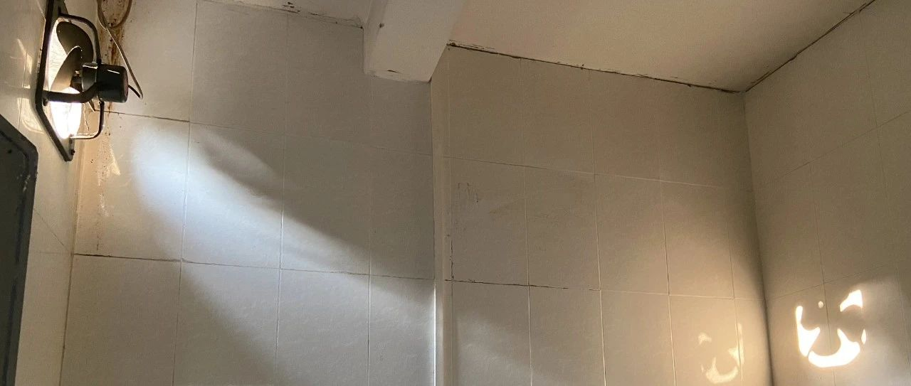

光线好可以数清楚灰尘和汗毛
来岛上的生活过得无比艰难，怪广州太好吃了。随便去斩料店里点上一份饭：排骨薏仁汤，烧鹅，菜心，白米饭，样样靓。
走之前绿老跟我哀哀说，别走呀，舍不得你。我心里面默默鼓着生气，我生的什么气呢？
“你为什么要搬去那儿呢？”
“我只是头掉了，四处乱窜而已。”
人不应该离开肠粉，深夜豆浆，门前被小林和绿嫌弃死，现在也吃不到的牛腩竹升面。人不应该离开广州。
但即使门口就是鲜美实惠鱼旦粉，再多走几步就能在谁家坐下就开饭，还是不幸福，就只能找一些山来劈。
来了岛上，吃不上一口好饭这种事不该拿出来嚷嚷，但要是做过广州人，根本忍不住。
过去一两个月才见一次面的古兰，一周给带了一次饭，帮忙上闲鱼找风扇；Sunday来来回回跑，炸鸡蔷薇红茶拿铁鱼人雕像台灯洗衣液，就差每天给空投物资。
孤独的泡面家，差点孤独得没饭吃。但岛上除了风景好，还给配了西施惠，恰是天添。
我三天两头半夜被锁在家楼下，全靠天添收留我，耐心帮我打通房东电话。旧窗户贴条的塑化膜清理的时候，碎得全屋都是塑料颗粒粉尘，天添给细细擦窗户，带来洗衣机清洁剂，血液清洁剂和吸尘器。
楼下总有人聊爱和爱情，唱关于爱的民谣，看关于爱的电影，约可能成为爱的千面人。我们在楼上聊，如何配制釉，陶泥的受力，二手面包机的性能，翻看生活的纸状碎片，超市收银小票、电影票、租房合同、营业执照……
同天添唧唧呱呱聊天散步，拐过一个弯，居民楼消失，大榕树密密挨在一起，穿过无人的坡，就是江水，探照灯扇形扫视江面。
我们在哪里？